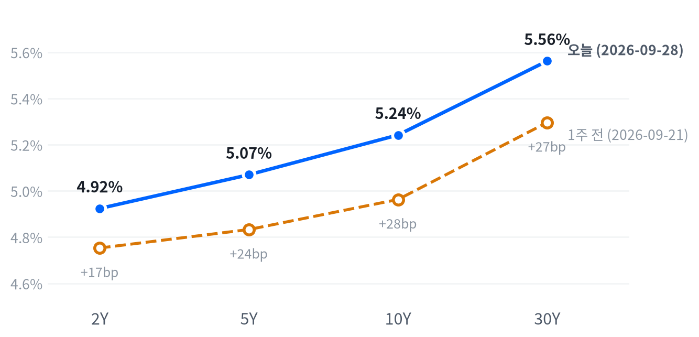

월요일 뉴욕 증시는 트럼프 대통령이 호르무즈 해협 재개방을 담은 이란 제안을 거부했다는 보도 뒤 내렸다. 유가가 오르자 국채금리가 전 만기에서 6bp가량 뛰었고, 10년물은 2007년 이후 가장 높은 수준으로 올라섰다(Yahoo Finance·CNBC 보도).
매도는 반도체·AI 하드웨어에 몰렸고 금은 3.77% 급락했다. 이 약세가 AI 수요 우려인지 금리 부담인지는 9월 30일 마이크론 실적이 가른다고 본다.
이란 뉴스가 유가를 거쳐 연준 기대로 번지며 이날 시장을 움직였다. 트럼프 대통령이 이란의 해협 재개방·종전 제안을 거부했다는 보도(TheStreet·Yahoo Finance) 뒤 유가가 올랐고, 국채금리는 2년물부터 30년물까지 같은 폭으로 뛰었다. 주식은 지수 전체보다 반도체·AI 하드웨어가 훨씬 크게 밀렸다(대형주 지수 -0.77%, 퀄컴 -7.17%).
이 금리 상승은 물가 기대가 아니라 정책 경로에 실렸다고 판단한다. 명목금리가 뛴 날 10년 기대인플레는 제자리였고, 보도된 CME FedWatch 10월 인상 확률은 9월 25일 저녁보다 올라 70%대로 돌아왔다. 시장은 유가 상승을 물가 전망보다 연준의 반응으로 번역했다. 반도체 약세는 사정이 다르다. 아시아 반도체가 OpenAI의 모델 훈련 중단 보도에 먼저 무너졌다는 점(Investing.com)은 수요 우려를, 10년물 최고치는 고멀티플 압축을 가리키고, 오늘 가격만으로는 둘을 떼어 낼 수 없다.
정책 경로 판단을 가장 직접 담는 상품은 2년물 국채 선물과 10월 FOMC 기일물 연방기금금리 선물이다. 그래도 지금은 관찰로 둔다. 보도된 인상 확률이 이미 70%를 넘어 방향이 맞아도 남은 보상이 작고, 공정가치나 체결 비용을 잴 자료가 없다. 시계는 9월 30일 PCE와 10월 2일 고용보고서까지다. 반도체·AI 하드웨어는 마이크론 실적 전에 방향을 정할 근거가 부족하므로, 10월 1일 정규장 반응을 10년물 방향과 나란히 놓고 판단한다.
브렌트가 다시 오르는데 2년물 금리가 내리면 에너지가 정책 기대를 끈다는 판단은 틀린 것이다. PCE나 고용이 컨센서스에서 크게 벗어나 2년물이 유가와 반대로 움직여도 지표 경로가 우세하다고 고친다. 반도체 쪽은 마이크론 실적이 양호한데도 10월 1일 AI 하드웨어가 금리 상승과 함께 빠지면 수요 우려가 아니라 금리 부담이 원인이었다고 본다.
| 지수 | 종가 | 등락률 | 기준일 |
|---|---|---|---|
| 닛케이225 | 66,364.20 | +1.30% | 9월 25일 |
| 항셍 | 24,510.09 | -1.01% | 9월 25일 |
| 상해종합 | 3,888.37 | -1.22% | 9월 24일 |
| DAX | 25,408.64 | +0.56% | 9월 25일 |
| FTSE100 | 10,695.30 | +0.14% | 9월 25일 |
| 유로스톡스50 | 6,302.82 | +0.48% | 9월 25일 |
| VIX | 16.07 | +8.07% | 9월 28일 |
아시아·유럽 지수는 확보된 가장 최근 마감 기준이다(상해종합 9월 24일, 나머지 9월 25일). VIX는 9월 28일 마감 기준이다.
유럽과 미국은 엇갈렸다. 가장 최근 마감인 9월 25일 유럽 세 지수는 평균 0.39% 올랐지만 월요일 미국은 하락으로 받았다. 아시아는 평균 -0.31%로 미국과 방향이 같았는데, 지역 안에서도 갈렸다(닛케이225 +1.30%, 항셍 -1.01%). 연휴 뒤 처음 열린 서울은 휴장 중 쌓인 미국 장기금리 급등과 유가 상승을 한꺼번에 반영해 코스피가 2.70% 내렸다고 Asia Business Daily는 전했다.
야간 선물은 일요일 저녁 거래가 열린 직후가 고점이었다. S&P500 선물(ES)은 18:00(ET) 7,792에서 06:00 7,757까지 밀렸고, 나스닥100 선물(NQ)은 20:00 고점에서 05:00 저점까지 1.2% 폭으로 더 크게 흔들렸다. 이 사이 이란 제안 거부 보도가 나오며 WTI가 07:00 하루 고점을 찍었다. 현물은 대형주 지수 -0.28%, 나스닥 -0.48%, 러셀2000 -0.33% 갭으로 내려 출발했다.
세 지수 모두 하루 범위의 중간쯤에서 끝났다. 오전 저점에서 정오 무렵 개장가 부근까지 되돌렸지만 오후에 다시 밀려, 매도가 끝까지 몰리지도 반등이 지켜지지도 않았다.
고점권·저점권 경계는 최근 2,253거래일의 일간 종가 위치 이력을 사분위로 나눠 다시 잰 기준이다.
이날은 금리가 주식을 움직였다. 이란 뉴스가 유가를 밀어 올렸고, 유가가 연준 인상 기대를 끌어올렸으며, 오른 금리가 주식을 눌렀다. 주식과 금리는 최근 60거래일 동안 느슨하게 반대로 움직여 왔고 오늘도 그 관계대로 반응했다. 금리 민감 업종보다 반도체·AI 하드웨어가 더 크게 빠진 것은 OpenAI 재료가 겹쳤기 때문일 수 있다. 장 마감 뒤 CNBC는 OpenAI가 안전 기준 미달로 GPT-6.1 Astra 출시 계획을 철회했다고 보도했고, AMD는 World Labs를 82억 달러에 인수한다고 발표했다. 두 재료는 9월 29일 OpenAI DevDay와 함께 AI 수요 서사를 한 번 더 시험한다.
주식과 금리의 최근 60거래일 상관계수 -0.44(직전 60거래일 -0.57).
| 지수 | 종가 | 등락률 |
|---|---|---|
| 다우존스 | 51,481.51 | -0.67% |
| S&P500 가치주 | 230.46 | -0.68% |
| 러셀2000 | 2,817.91 | -0.69% |
| S&P500 성장주 | 142.21 | -0.75% |
| S&P500 | 7,683.69 | -0.77% |
| 나스닥 | 26,820.38 | -0.92% |
| 섹터 | 등락률 |
|---|---|
| 헬스케어 | +0.33% |
| 필수소비재 | +0.27% |
| 에너지 | +0.10% |
| 부동산 | -0.51% |
| 유틸리티 | -0.66% |
| 소재 | -0.66% |
| 기술 | -0.89% |
| 산업재 | -0.97% |
| 금융 | -1.19% |
| 경기소비재 | -1.41% |
| 커뮤니케이션서비스 | -1.58% |
S&P500은 7,684로 내렸어도 최근 2년(504거래일) 가운데 이보다 높았던 날이 22일뿐인 자리에 있고, 나스닥(26,820)은 이보다 높았던 날이 11일뿐이다. 오늘 낙폭은 세 지수 모두 평소 하루 움직임과 비슷한 크기라 최고권에서 한 발 물러선 정도다. 한 달로 보면 기술 섹터가 4.88% 오르는 동안 금융(-6.40%)과 경기소비재(-6.80%)가 크게 밀려, 지수의 높이는 기술 한 업종이 떠받쳐 왔다.
대형주 지수는 개장가가 사실상 하루 고점이었다. 개장 직후 금리·유가 상승에 밀려 10:30(ET) 7,667까지 0.71% 내렸다가 정오 무렵 개장가 부근을 되찾았지만, 7,700선을 지키지 못하고 오후 내내 되밀렸다. 정오 반등을 만든 재료는 확인되지 않았고, WTI가 하루 고점에서 밀려 내려오던 시간대와 겹칠 뿐이다. 나스닥은 같은 궤적을 그리며 오전 낙폭이 0.85%로 더 깊었다. 엔비디아는 자사주 매입 증액 보도로 개장 직후 233달러까지 올랐다가 오후에 상승폭 일부를 내줬다.
지수를 끌어내린 것은 기술과 두 대형 종목이었다. 하락 0.77% 가운데 기술이 0.30%포인트로 가장 크게 깎았고 커뮤니케이션서비스(-0.21%포인트), 경기소비재(-0.18%포인트), 금융(-0.13%포인트)이 뒤를 이었다. 헬스케어(+0.03%포인트)와 필수소비재·에너지가 조금 받쳤고, 아홉 섹터로 설명되지 않는 부분은 +0.09%포인트다. 커뮤니케이션서비스와 경기소비재의 몫은 메타(-4.79%)와 테슬라(-3.94%)가 대부분 만들었다.
섹터 기여는 최근 252거래일 회귀로 추정했다. 소재·부동산은 추정에서 식별되지 않아 뺐다.
하락의 모양은 방어적이었다. 오른 섹터는 헬스케어·필수소비재·에너지뿐이고, 성장주와 가치주의 낙폭 차이는 작아 스타일이 바뀐 날이라기보다 금리와 개별 종목 재료가 겹친 날이다. 중간쯤에서 끝난 마감까지 감안하면 최고권 추세가 꺾였다고 볼 근거는 아직 약하다고 판단한다.
| 만기 | 종가 | 전일比(bp) | 1주 전 | 주간 변화(bp) |
|---|---|---|---|---|
| 2Y | 4.924% | +6.0 | 4.753% | +17.1 |
| 5Y | 5.070% | +6.5 | 4.833% | +23.7 |
| 10Y | 5.242% | +6.1 | 4.963% | +27.9 |
| 30Y | 5.562% | +6.0 | 5.296% | +26.6 |
네이버 국채 종가 기준(2026-09-28, 전 만기 동일 기준일). 1주 전은 9월 21일.

1주 전(9월 21일) 대비 5년물과 10년물이 가장 크게 올라 커브 전체가 위로 밀렸다(베어 스티프닝).
10년물(5.242%)과 30년물(5.562%)은 최근 두 해를 통틀어 가장 높은 자리로 올라섰다. CNBC는 10년물이 2007년 이후, 30년물이 2004년 이후 최고라고 전했다. 이 자리까지 오는 데 한 주면 충분했다. 9월 21일보다 10년물은 27.9bp, 2년물은 17.1bp 올라 장기 쪽이 더 크게 뛰었다.
하루로 보면 평행 이동이었다. 네 만기가 모두 6.0~6.5bp 올라 2s10s는 31.8bp로 전 거래일과 거의 같았고, 5s30s는 49.2bp다. 한 주로 넓히면 10년물이 2년물보다 10.8bp 더 올라 커브는 베어 스티프닝을 이어 갔다. 오늘은 단기 정책 기대가 전 구간을 같은 폭으로 끌어올렸고, 지난주 장기 쪽을 더 밀던 힘은 쉬었다.
30년물이 평소 하루 움직임의 1.5배로 뛴 원인은 이란발 유가 상승이 연준 인상 기대를 밀어 올린 경로로 판단한다. 트럼프 대통령의 제안 거부 보도 뒤 CNBC 기준 11월물 브렌트 정산가는 105.28달러로 0.96달러 올랐고, 보도된 CME FedWatch 10월 인상 확률도 함께 높아졌다. 2년물부터 30년물까지 같은 폭으로 오른 것은 기간프리미엄보다 정책 기대가 전 구간을 밀었다는 해석에 맞는다. 같은 날 노르웨이 중앙은행이 기준금리를 4.5%로 올려 글로벌 긴축 분위기도 겹쳤고, Yahoo Finance는 재정적자와 AI 투자 사이클도 원인으로 나열했다.
상승분은 기대인플레 몫이 아니었다. 9월 28일 10년 기대인플레는 2.34%로 하루 변화가 없었고 5년 기대인플레는 1bp 내렸다. 명목이 6bp 오른 날 물가 보상이 제자리였으니 나머지는 실질금리 몫으로 판단한다. 같은 날짜로 맞춘 가장 최근 분해(9월 25일 기준)도 한 주간 10년물 명목 16bp 상승 가운데 15bp가 실질금리였다. 9월 28일 실질금리가 갱신되면 오늘 상승의 내역이 확정된다.
신용시장은 오늘 이전부터 넓어지고 있었다. 하이일드 스프레드는 9월 25일 기준 2.93%포인트로 하루 13bp, 한 주 25bp 벌어졌고 투자등급은 0.81%포인트로 하루 2bp 넓어졌다. 9월 28일 단기물 입찰은 무난했다(26주물 응찰배율 2.64배·간접 낙찰 53.7%, 13주물 2.99배·58.6%). 10년 기간프리미엄은 9월 18일 기준 0.96%포인트로 오늘 움직임을 설명할 만큼 새롭지 않다.
5년 뒤 5년 명목금리는 9월 25일 기준 5.36%로 하루 3bp 올랐고, 실질 기준으로는 3.02%다. 기대인플레 지표와의 교차검증은 이번에 할 수 없었다. 위험 프리미엄이 섞인 값이라, 시장이 먼 구간 금리를 이 수준에서 거래한다는 정도로만 읽는다.
| 통화쌍 | 종가 | 등락률 |
|---|---|---|
| DXY | 101.18 | +0.20% |
| USD/KRW | 1,354.51 | -0.94% |
| USD/JPY | 157.46 | -0.85% |
| EUR/USD | 1.1378 | +0.03% |
원/달러는 1,355원으로 내려 최근 두 해 가운데 이보다 낮았던 날이 13일뿐인 원화 강세 자리에 섰다. 달러지수와 엔/달러는 같은 기간의 한가운데쯤이다. 오늘 달러는 지수로는 조금 올랐지만 엔과 원에 대해서는 평소 하루 움직임의 1.5배 가까운 폭으로 밀렸다.
달러지수의 소폭 강세는 미국 금리가 오르며 벌어진 금리차 경로로 본다. 유로는 거의 움직이지 않았다. 엔 강세는 일본 재료였다. Bloomberg는 일본 외환 당국자가 엔 약세를 경고했고 다카이치 총리가 트럼프 대통령과의 회담에서 저평가 통화를 문제로 언급했다고 보도했다. 엔/달러는 09:00(ET) 156.50엔까지 내려 9월 18일 이후 가장 강한 엔을 기록한 뒤 157엔대로 돌아왔다. 원화 강세의 개별 재료는 확인하지 못했고, 같은 날 엔과 같은 방향이었다는 관측만 남는다.
| 품목 | 종가 | 등락률 |
|---|---|---|
| WTI | $93.20 | +0.85% |
| Brent(12월물) | $98.60 | 월물 교체로 비교 불가 |
| 천연가스 | $3.14 | -1.69% |
| 금 | $4,158.20 | -3.77% |
브렌트 종가는 근월물이 11월물에서 12월물로 바뀐 뒤의 가격이다. 전 거래일 값(11월물 104.32달러)과의 차이는 두 계약의 가격 차이라 하루 등락률로 싣지 않는다. CNBC 기준 11월물 정산가는 105.28달러로 0.96달러 올랐다.
WTI는 93.20달러로 같은 기간 가운데 높은 쪽 12% 안에 머물렀고, 오늘 상승은 평소 하루 움직임의 4분의 1 정도로 미미했다. 종가만 조용했다. 제안 거부 보도로 07:00(ET) 96.54달러까지 올랐다가, CNBC가 전한 사우디 동서 파이프라인 재가동 보도에 오후 91.25달러까지 밀린 뒤 중간에서 끝났다.
브렌트는 표의 숫자로 오늘 하루 등락을 읽을 수 없다. 수집 기준 근월물이 11월물에서 12월물로 넘어가며 표의 종가가 한 계약 아래로 내려앉았고, 두 월물 사이에는 약 6.9달러의 백워데이션이 있다고 Investing.com 계약 페이지는 보여 준다. 같은 월물로 보면 11월물은 0.96달러 올라 유가 상승 쪽이었다. WTI와의 스프레드도 월물이 어긋나 오늘은 같은 기준으로 비교할 수 없다. 천연가스(-1.69%)의 개별 재료는 확인하지 못했다.
금은 4,158달러로 3.77% 내렸다. 평소 하루 움직임의 2.8배다. 새벽 4,233달러 고점에서 10:30(ET) 4,143달러까지 밀린 뒤 되오르지 못했다. Yahoo Finance와 USAGOLD는 유가 반등, 달러와 금리 상승, 연준 추가 인상 기대를 원인으로 들었고 현물이 8월 5일 이후 최저로 내려왔다고 전했다. 금과 금리는 최근 60거래일 동안 느슨하게 반대로 움직여 왔다. 오늘은 기대인플레가 제자리인 채 명목금리가 오른 날이라, 실질금리 상승이 금 보유비용을 올린 경로로 판단한다. 그 크기는 9월 28일 실질금리가 갱신돼야 확인된다.
금과 금리의 최근 60거래일 상관계수 -0.33(직전 60거래일 -0.33). 오늘 금 낙폭은 최근 60거래일 평균 하루 움직임의 2.76배다.
미국 경기 국면은 성장·물가가 모두 둔화 방향인 연착륙을 9월 1일부터 20영업일째 유지한다. 오늘은 새 경제지표 발표가 없어 국면이 움직일 수 없다. 성장 점수(-0.065)는 0에 가까워 보합 쪽을 가리키지만 좌표를 옮기려면 새 발표가 필요하고, 물가 점수(-0.648)는 둔화 쪽에 머문다. 국면을 다시 열 계기는 9월 29일 JOLTS, 30일 PCE 물가, 10월 2일 고용상황이다.
| 지표 | Actual | Forecast | Previous | 발표일 | 컨센 대비 | 직전 대비 | 추세 |
|---|---|---|---|---|---|---|---|
| 구인건수(7월) | 7,271K | — | 7,182K | 2026-07 기준월 | 개선 | 개선(미미) · 3개월 평균 7,131K → 7,330K | |
| 신규 실업수당 청구 | 197,000 | 201,000 | 198,000 | 2026-09-24(9월 19일 주간) | 하회▼ | 개선 | 개선(미미) · 4주 평균 206K → 202K |
| 신규 청구 4주 평균 | 202,250 | — | 204,000 | 9월 19일 주간 | 개선 | 악화(미미) · 4주 평균 202K → 205K | |
| 계속 실업수당 청구 | 1,719,000 | — | 1,717,000 | 9월 12일 주간 | 악화 | 개선(뚜렷) · 4주 평균 1,787K → 1,744K | |
| 비농업 고용 변화(8월) | +162K | — | +21K | 2026-08 기준월 | 개선 | 악화(완만) · 3개월 평균 +142K → +71K | |
| 실업률(8월) | 4.1% | — | 4.1% | 2026-08 기준월 | 보합 | 개선(완만) · 3개월 평균 4.30% → 4.13% | |
| 평균시간당임금 MoM(8월) | +0.27% | — | +0.16% | 2026-08 기준월 | 개선 | 개선(완만) · 3개월 평균 +0.20% → +0.23% |
| 지표 | Actual | Forecast | Previous | 발표일 | 컨센 대비 | 직전 대비 | 추세 |
|---|---|---|---|---|---|---|---|
| 산업생산 MoM(8월) | +0.02% | — | +0.20% | 2026-08 기준월 | 악화 | 보합 · 3개월 평균 +0.24% → +0.14% | |
| 내구재주문 MoM(8월) | -0.02% | -0.3% | +0.86% | 2026-08 기준월 | 상회▲ | 악화 | 악화(완만) · 3개월 평균 +1.95% → +0.47% |
| 신규주택판매(8월) | 684K | 620K | 643K | 2026-09-24 | 상회▲ | 개선 | 개선(미미) · 3개월 평균 645K → 666K |
| 기존주택판매(8월) | 398만 | — | 406만 | 2026-08 기준월 | 악화 | 악화(미미) · 3개월 평균 4,080K → 4,057K | |
| 실질GDP QoQ 연율(2분기) | +1.5% | 1.6% | +2.1% | 2026년 2분기 기준 | 하회▼ | 악화 | — |
| S&P Global 제조업 PMI(9월 속보) | 57.0 | 53.6 | 53.9 | 2026-09-23 | 상회▲ | — | — |
| S&P Global 종합 PMI(9월 속보) | 58.4 | — | 56.0 | 2026-09-23 | — | — |
| 지표 | Actual | Forecast | Previous | 발표일 | 컨센 대비 | 직전 대비 | 추세 |
|---|---|---|---|---|---|---|---|
| 소매판매 MoM(8월) | +1.24% | — | -0.54% | 2026-08 기준월 | 개선 | 악화(뚜렷) · 3개월 평균 +1.11% → +0.34% | |
| 미시간대 소비자심리(8월) | 51.7 | — | 55.2 | 2026-08 기준월 | 악화 | 개선(미미) · 3개월 평균 49.3 → 52.1 |
| 지표 | Actual | Forecast | Previous | 발표일 | 컨센 대비 | 직전 대비 | 추세 |
|---|---|---|---|---|---|---|---|
| CPI YoY(8월) | 3.71% | — | 3.54% | 2026-08 기준월 | 상승 | 교착 · 3개월 평균 3.85% → 3.66% | |
| CPI MoM(8월) | +0.40% | — | +0.07% | 2026-08 기준월 | 상승 | 둔화(뚜렷) · 3개월 평균 +0.66% → +0.02% | |
| Core CPI YoY(8월) | 2.76% | — | 2.79% | 2026-08 기준월 | 하락 | 교착 · 3개월 평균 2.87% → 2.79% | |
| Core CPI MoM(8월) | +0.29% | — | +0.22% | 2026-08 기준월 | 상승 | 둔화(완만) · 3개월 평균 +0.26% → +0.16% | |
| PPI 최종수요 MoM(8월) | +0.40% | — | +0.07% | 2026-08 기준월 | 상승 | 둔화(뚜렷) · 3개월 평균 +0.79% → +0.12% | |
| PCE 물가 YoY(7월) | 3.70% | — | 3.72% | 2026-07 기준월 | 하락 | 재가속(완만) · 3개월 평균 3.41% → 3.84% | |
| Core PCE YoY(7월) | 3.34% | — | 3.34% | 2026-07 기준월 | 보합 | 재가속(미미) · 3개월 평균 3.21% → 3.38% | |
| 미시간대 1년 기대인플레(8월) | 4.0% | — | 4.2% | 2026-08 기준월 | 하락 | 교착 · 3개월 평균 4.43% → 4.27% |
직전 대비는 Actual을 Previous와 비교한 것이고, 추세는 최근 3개월 평균을 그 앞 3개월 평균과 비교한 것입니다(주간 실업수당 청구는 4주 평균끼리). 추세의 세기는 그 지표가 평소 움직이는 폭에 견준 크기이고, 작은 변화는 보합으로 봅니다. 분기 지표인 GDP는 두 비교가 같은 숫자를 보므로 직전 대비만 싣습니다.
연준의 다음 수는 10월 28일 FOMC의 추가 25bp 인상이라는 판단을 유지한다. CME FedWatch 기준 이 확률은 9월 24일 75% 이상(CNBC)이었고, 9월 28일에는 70.3%로 보도됐다(Yahoo Finance). 두 값은 매체와 시각이 달라 같은 조건의 비교가 아니지만, 어느 쪽으로 봐도 15%포인트 넘게 움직이지 않아 시점 판단을 바꾸지 않는다.
다음 FOMC 성명·회견에서 이미 확인된 인상 신호를 되돌리는 언급이 나오거나 물가·고용 지표가 예상보다 뚜렷하게 냉각되면 인상 우위 판단을 재검토한다.
자산별 전달경로는 전일과 같다. 새 발표가 없는 날이라 방향을 바꿀 근거가 들어오지 않았다.
엔비디아(+1.68%)는 반도체 약세 속에서 지수를 받친 종목이다. Benzinga는 엔비디아가 자사주 매입 한도를 1,500억 달러 늘려 총 2,350억 달러로 키웠다고 보도했다. 사상 최대 규모의 증액 덕에 엔비디아는 업종의 수요 우려를 비껴갔다.
메타(-4.79%)가 커뮤니케이션서비스를 끌어내렸다. Investing.com은 OpenAI의 상시 구동 AI 비서 「o」가 9월 29일 DevDay에서 공개될 것으로 알려지면서, 뮤즈 흥행으로 쌓인 9월 랠리에 경쟁 우려가 생겼다고 전했다. 같은 날 메타는 몽고DB CEO를 엔터프라이즈 부문장으로 영입했고, CNBC에 따르면 몽고DB는 18% 넘게 급락했다.
테슬라(-3.94%)는 JPMorgan이 목표가를 445달러에서 415달러로 내린 날 밀렸다(MarketBeat 보도). JPMorgan과 골드만삭스는 3분기 인도량 전망을 낮췄고, Cantor는 이번 주 인도 실적이 부진할 것으로 봤다.
팔로알토 네트웍스(+4.63%)는 AI 방어 제품 출시와 엔비디아 AI 에이전트 안전 이니셔티브 참여 소식에 올랐다고 StockStory는 전했다. BTIG는 목표가를 404달러에서 425달러로 올렸고, Morgan Stanley는 최선호주 의견을 유지했다.
인텔(-5.67%)과 퀄컴(-7.17%)은 반도체 약세 속에 가장 크게 빠졌다. Quiver와 Benzinga는 반도체 전반의 약세와 급등 뒤 차익실현을 원인으로 들었지만, 두 종목 각각에 고유한 신규 재료는 확인되지 않았다.
메모리·AI 인프라 바스켓의 최근 20거래일 초과수익은 대부분 반도체 업종 자체의 움직임으로 설명된다. 메모리는 초과수익 8.48%포인트 가운데 반도체 축이 15.51%포인트를 설명하고 세 축으로 설명되지 않는 몫은 -4.42%포인트다. AI 인프라는 초과수익 5.53%포인트를 반도체 축(+12.19%포인트)이 끌어올리고 대형−소형 축(-6.26%포인트)이 깎았으며, 성장−가치 축이 +2.41%포인트를 보탰다. 스타일이 아니라 업종에 실린 수익이라, 오늘 같은 업종 고유의 수요 뉴스에 그만큼 크게 흔들린다.
하루치 초과수익의 20거래일 합을 60거래일 계수로 나눈 값이다. 메모리의 성장−가치·대형−소형 축은 252거래일 계수와 방향이 달라 인용하지 않았다. 시장 민감도는 메모리 2.20, AI 인프라 3.04.
9월 25일에 연 질문은 호르무즈 협상 뉴스가 FedWatch 10월 인상 확률, 2년물 금리, 커브 스티프닝을 함께 움직이는가였다. 첫 시험 세션인 오늘 뉴스는 반대 방향(제안 거부)으로 나왔고, 세 변수 가운데 셋째를 뺀 둘은 가설대로 유가와 같은 방향으로 움직였다. 11월물 브렌트가 오르고 2년물이 6.0bp 뛰었으며, 보도된 인상 확률은 9월 25일 저녁 64%(CNBC)에서 70.3~72.3%로 높아졌다. 방향은 지지되고 반증 조건은 나오지 않았다. 메커니즘은 아직 가릴 수 없다. FedWatch 수치는 매체와 시각이 달라 같은 조건의 비교가 아니고, 장중 금리 경로가 없어 사우디 파이프라인 보도로 유가가 밀린 오후에 2년물이 따라 내렸는지 볼 수 없다. 스티프닝 다리는 시험되지 않았다. 하루로는 평행 이동이라 2s10s가 31.7bp에서 31.8bp로 거의 그대로였다. 가설을 처음 세울 때 기록한 브렌트 하락폭에도 월물 교체가 섞였을 수 있어, 앞으로 유가 다리는 같은 월물의 정산가로만 비교한다.
9월 22일에 연 질문은 FOMC 인상 뒤 메모리·AI 인프라가 금리 민감 업종과 따로 움직이는가였다. 오늘은 그 분리가 약해졌다고 본다. 10년물이 최고치를 쓴 날 금융·유틸리티·부동산이 약했지만, AI 인프라 다섯 종목도 모두 내렸고(마벨 -3.83%, 코히런트 -4.52%, 버티브 -3.65%) 마이크론도 2.61% 빠졌다. 금리가 크게 오른 날 AI 인프라가 함께 빠진 것은 9월 23·24일에 이어 세 번째다. 메커니즘은 판정할 수 없다. OpenAI 훈련 중단 보도가 AI 하드웨어에 고유한 수요 우려를 보탰기 때문이다. 원래 마감인 10월 28일 FOMC까지 질문을 열어 두고, 수요와 금리를 가르는 일은 아래 새 질문으로 넘긴다.
새 질문은 반도체·AI 하드웨어의 초과 하락이 AI 수요 우려인지 금리발 밸류에이션 압축인지다. 금리가 전 구간에서 오른 날 금리 민감 업종보다 AI 하드웨어가 몇 배 더 빠졌고, 아시아 반도체가 OpenAI 보도에 먼저 반응했다는 점에서 수요 서사 쪽에 무게를 둔다. 대안은 10년물 최고치에서 나온 고멀티플 차익실현이다(GuruFocus·24/7 Wall St 설명). 마이크론 실적의 서베이 컨센서스와 옵션 내재 변동폭을 확보하지 못해 주가가 무엇을 반영하는지는 모르고, 회사 가이던스(매출 500억±10억 달러)는 시장 기대치가 아니다. 시험 창은 9월 30일 장 마감 뒤 실적 발표(콜 16:30 ET)부터 10월 1일 정규장 마감까지다. 실적이 양호하고 10년물이 5.2% 이상에 머무는데도 마이크론과 AI 인프라가 대형주 지수보다 강하면 수요 서사가, 실적이 양호한데 금리와 함께 빠지면 금리 경로가 우세하다.
세 질문 모두 이번 주 일정에서 갈린다. 먼저 9월 30일 PCE와 10월 2일 고용보고서 직후 2년물과 인상 확률이 브렌트 방향을 따르는지 본다(마감 10월 9일). 그 사이 10월 1일 마감에는 마이크론·AI 인프라의 지수 대비 성과를 10년물 방향과 나란히 놓는다.
이 보고서의 시세는 Yahoo Finance와 네이버 국채 종가, 경제지표는 FRED와 각 발표 기관(BLS·BEA·Census 등), 그 밖의 내용은 본문에 밝힌 출처에서 가져왔다. 이 보고서는 투자 자문이 아니며 특정 자산의 매수·매도를 권유하지 않는다. 투자 판단과 그 결과에 대한 책임은 전적으로 투자자 본인에게 있다.